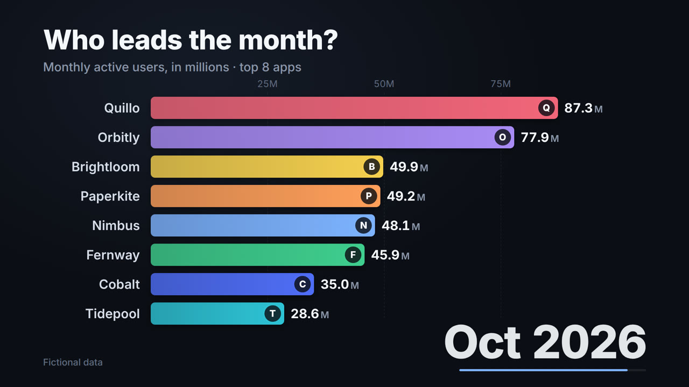
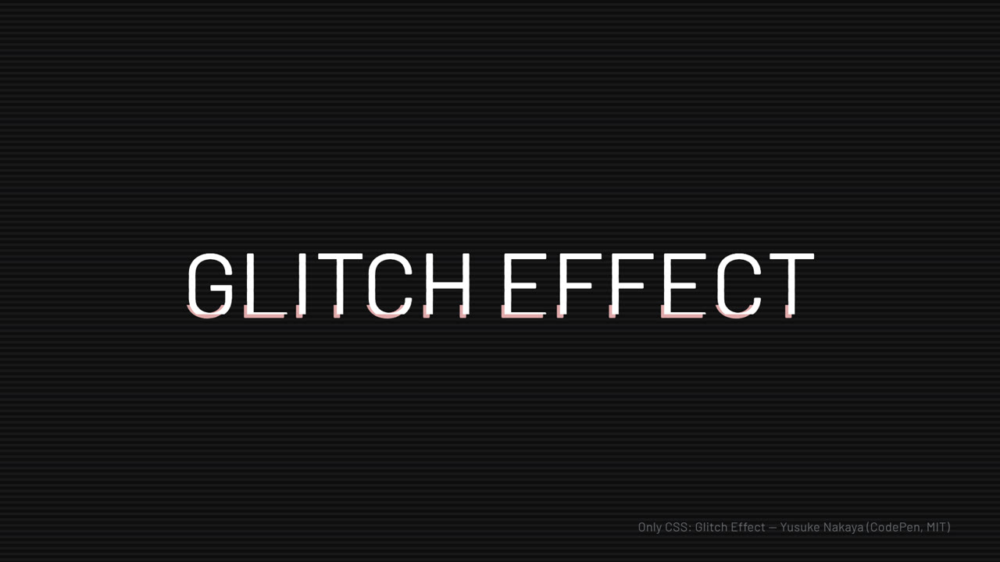
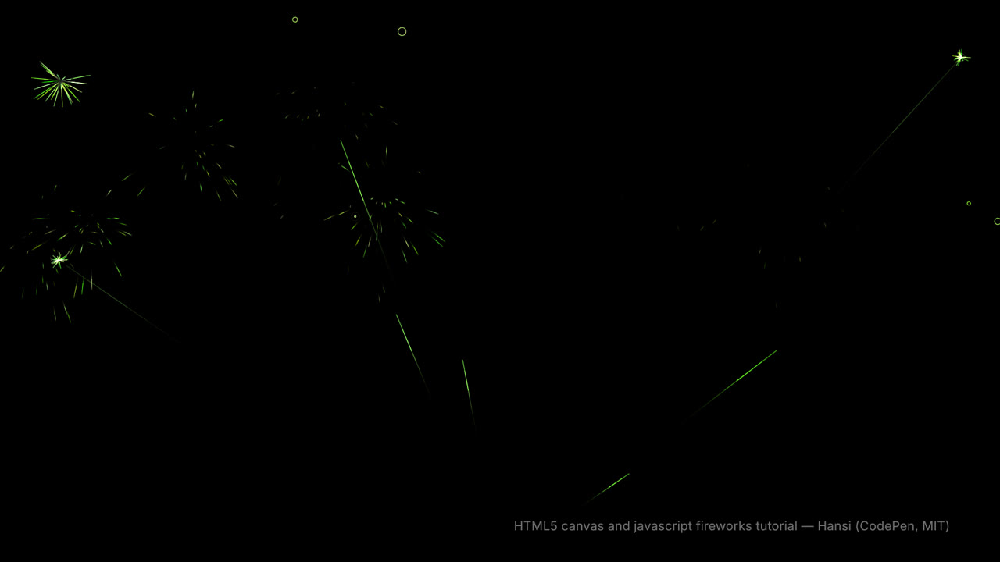
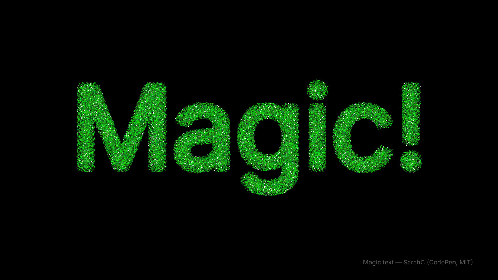
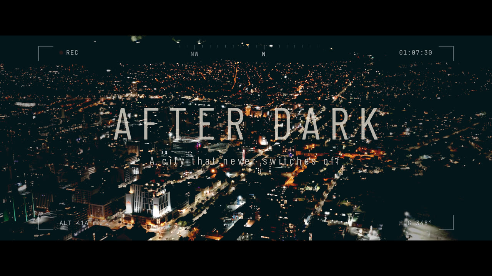

Samples, written by an agent,
rendered by KairoFrame
Each film below was written from one prompt by a fresh Claude Code session in an empty kairoframe init project,
with no hand edits, then rendered by KairoFrame. The ones marked CodePen port start from a public, MIT-licensed CodePen effect, and Pexels footage puts the film on top of real stock video; both are credited on their pages. Every page shows the prompt, the tokens and cost of writing it, and how long the render took,
so you can make it again.

Aurora launch title
Kinetic typography and a living gradient for a product launch.

Bar chart race
24 months of data, bars that overtake each other, numbers that count up.

Motion blur, side by side
The same fast move twice: plain on the left, KairoFrame motion blur on the right.

Orbital, in Three.js
A WebGL scene from Three.js, driven frame by frame by the film's clock.

From HTML to MP4
A code editor and a terminal tell how a KairoFrame film is made.

Weekly weather, 9:16
A vertical social card: animated icons, a temperature line that draws itself.
Marble flow shader
A WebGL fragment shader from CodePen, ported to a film: liquid marble in red and blue.

CSS glitch text
A pure-CSS glitch effect from CodePen, timed so every glitch lands on the same frame every render.

Canvas fireworks
A classic canvas fireworks demo from CodePen, with the clicks replaced by a scripted show.

Particle vortex
A generative canvas piece from CodePen: thousands of green particles in a swirling field.

City after dark
Real 4K aerial footage from Pexels with a grade, a drone HUD and a title sequence on top.
Where these were rendered
| System | Ubuntu 24.04 (Linux x86-64) |
| CPU | AMD Ryzen 9 9900X3D (12 cores, 24 threads) |
| GPU | NVIDIA GeForce RTX 5090 (H.264 encoding with NVENC) |
| Memory | 64 GB |
| KairoFrame | v0.3.2 for Linux, --crf 23 |
| Official Chrome | Google Chrome for Testing 152.0.7977.30 (headless shell, what the installer sets up) |
| Patched Chrome | Chromium 152.0.7977.30 with KairoFrame's raw-frames patch (the fast browser, --engine fast), official build |
| Method | each film three times per browser, the browsers alternating; median wall-clock time, browser start included |
The patched Chrome hands each frame out as raw pixels instead of a JPEG: no encoding, no decoding, nothing lost. It is not in the Linux package yet. Costs are list prices from the session's usage report. Music: tracks by Kevin MacLeod (incompetech.com), licensed under CC BY 4.0, credited on each film's page and mixed in by KairoFrame.
Also tried: a product UI demo
KairoFrame can draw product UI demos of this kind too: comments typed letter by letter, threads that open and collapse, a cursor that clicks, reactions that count up. As a test we recreated a 23-second UI clip (Notion's Threaded Comments post) as an HTML project: the opening zoom and the end card are the original footage, the music is the original track, and the comments UI in between was rebuilt in HTML at 1080p by a coding agent, then timed to the original. Left: the original. Right: KairoFrame, 684 frames rendered in 3.6 s with the official Chrome, 3.5 s with the patched one.
An unofficial test; not affiliated with Notion.